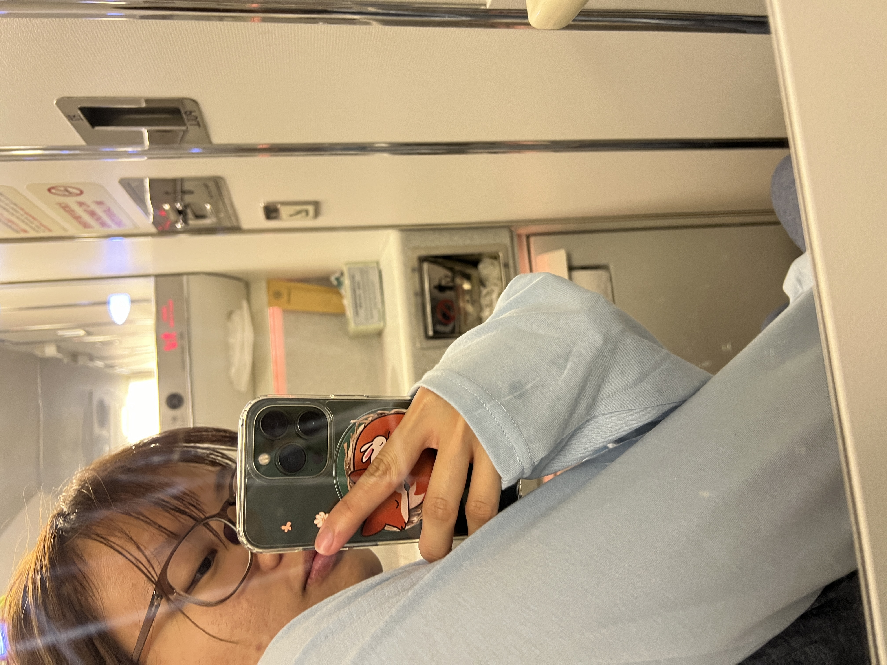
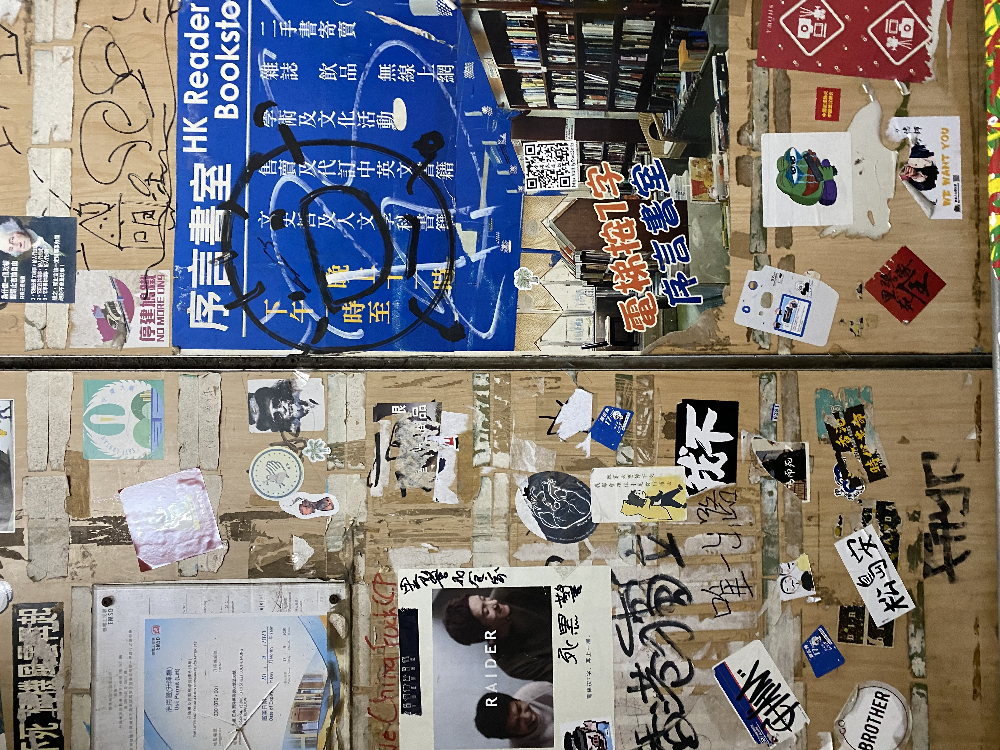

☰
College Travelers
Post
×
Email
Password
Sign Up/ Login
Cancel
Forgot password?
Abandoned project site: design moving to main page
🇨🇦 Gorgeous tree at Stanley Park
Prettiest metro station on Earth
Night walk in Central Park
ì˜›ë‚ 홍콩 느낌 이쁘네
What's this flower??
The light is making me dizzy in this exhibition😵‍💫
Crab said hi to us 🙋🏻‍♀️🦀
Mileage run for star alliance gold membership
MINIONS ASSEMBLE!
@USJ Osaka
Where is this? Japan or Taiwan?
【望東灣】99%香港人沒聽過的隱世海灣
Alien👽 head spotted in Sichuan
What are you looking at? This is an airplane
This is why I love Hong Kong so much
Winter picnic on a beach
여기 ㅈㄴ 무서워!!!!
Hiking trips always end with a cat in Hong Kong
Stayed up all night and saw this, ah home
The food truck that saved me from heat stroke
Why does this film look so fail?🥹

Turbulence trapped me in the bathroom 😱😱😱
~~Tamatebako train experience~~
The library that deserves a design award
iPod 5 photography works...
Watch this with the love of your life or regret
LONG TIME NO DIVE!
Hidden gem in Taipei! 🏞️
ê°€ê³ ì‹œë§ˆ 풍경 숨이막혔다
Didn't get to see whalesharks but ––
My father grew up in this fish village
The Peak
Challenge accepted: no dripping on the table!
First bird shot on my camera!
Fallen in love with fall?
if this is not a UFO, then what this is?
NYC iPhone wallpaper
香港真係好適合影啲復古feel菲林相...
Fading Hong Kong
Taipei's most iconic landmark
Woke up to this view, I want to live here forever
Found this near HK airport

This is the place young people love to go(??)
🤔 Is this an egg tart in the sky
handsome car
In the Toy Story world🦖
Penang street arts!
This is def not the best eggtart in HK
🐱Healing cat cafe near Taichung HSR station🐱